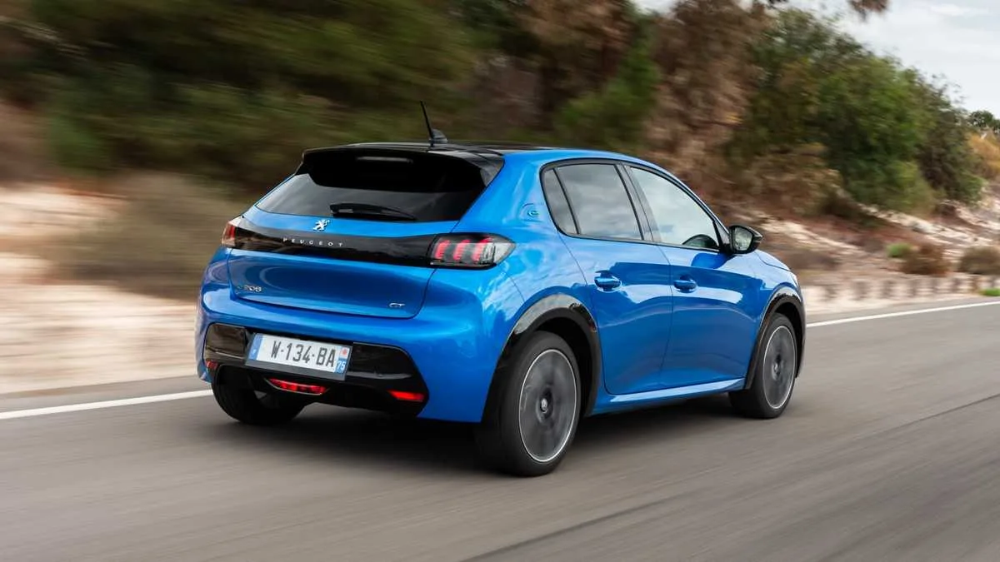
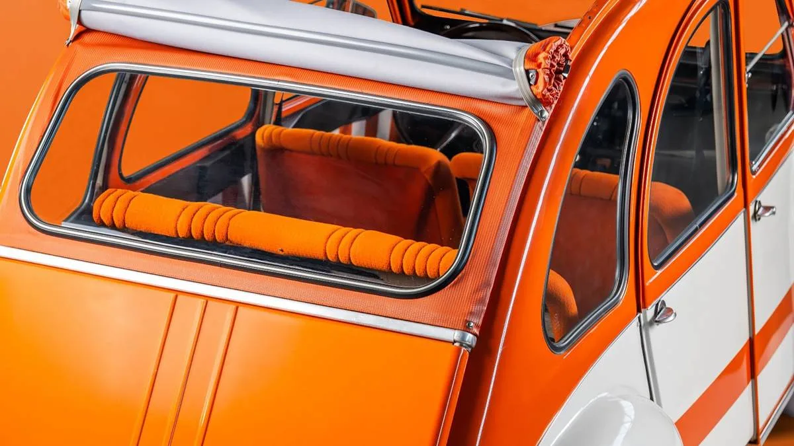

▲ 스텔란티스가 출원한 신개념 테일게이트 특허 도면. 트렁크리드를 상하 두 부분으로 나눠 각기 다른 방식으로 여닫는 구조다
스텔란티스가 세단·해치백용 트렁크리드를 완전히 새롭게 재해석한 특허를 출원했습니다. 핵심은 트렁크리드를 상단부와 하단부 두 부분으로 나누는 구조입니다. 하단부는 픽업트럭 테일게이트처럼 접혀 내려가 짐을 얹을 수 있는 받침대 역할을 하고, 상단부는 지붕 위로 완전히 회전하며 활짝 열립니다. 이 상태는 지붕의 슬롯에 끼우는 고정 바로 잠글 수 있어, 열린 채로 안정적으로 유지됩니다.
1. "로프로 묶을 필요가 없다" — 해결하려는 문제
현재 대부분의 세단은 상단 힌지 방식의 고정된 트렁크리드만 제공합니다. 짐이 트렁크보다 길면, 트렁크를 열어둔 채로 로프나 끈으로 고정하는 수밖에 없었습니다. 이 과정에서 트렁크리드나 화물이 손상되는 경우도 적지 않습니다. 스텔란티스의 특허는 바로 이 지점을 겨냥합니다. 특허 설명에 따르면 "큰 짐을 옮길 때 트렁크를 열어둔 상태에서 로프로 고정할 필요가 없다"는 것이 핵심 목표입니다. 개방 상태에서 완전히 고정되는 메커니즘을 도입해, 별도 결속 장치 없이도 안전하게 화물을 운송할 수 있도록 한 것입니다.

▲ 픽업트럭의 접이식 테일게이트. 스텔란티스 특허의 하단부는 이런 픽업트럭 방식의 짐받이 구조를 세단에 이식한 형태다
2. 모터로 여닫는 무거운 게이트
지붕 위까지 완전히 열리는 상단부는 무게가 상당할 수밖에 없습니다. 이 때문에 특허에는 모터를 장착해 무거운 게이트를 손쉽게 열고 닫을 수 있도록 하는 구성도 포함돼 있습니다. 수동으로 들어 올리기 힘든 구조를 전동화로 보완한 셈입니다. 이 기술은 프랑스 스텔란티스 산하 브랜드인 푸조, 시트로엥의 해치백·리프트백 세단에 우선 적용될 것으로 예상됩니다. SUV나 왜건보다 상대적으로 트렁크 개구부가 좁은 세단·해치백 차체에서 실용성이 더 크기 때문으로 풀이됩니다.

▲ 푸조 e-208. 스텔란티스의 새 테일게이트 특허가 적용될 가능성이 있는 프랑스 브랜드 해치백 라인업 중 하나다
3. 시트로엥 2CV의 유산 — 실용성을 향한 오랜 전통
이번 특허를 보도한 CarBuzz는 참고 이미지로 시트로엥의 상징적인 모델 2CV를 함께 소개했습니다. 2CV는 접히는 캔버스 지붕과 탈부착식 좌석 등, 실용성을 극단까지 추구한 설계로 유명했던 차입니다. 스텔란티스의 이번 특허 역시 이런 프랑스 브랜드 특유의 '실용주의 엔지니어링' 전통과 궤를 같이한다고 볼 수 있습니다. 화려한 스펙보다 일상적인 불편함을 해결하는 데 집중하는 방식입니다.

▲ 시트로엥 2CV. 실용성을 극단까지 추구한 설계로 유명한 이 모델은, 스텔란티스가 여전히 이어가는 프랑스 브랜드 엔지니어링 전통을 상징한다
4. 자동차 특허가 매일 쏟아지는 이유
완성차 업체의 특허 출원 소식이 유독 자주 들리는 데는 이유가 있습니다. 대부분의 특허 당국은 출원 후 18개월이 지나면 실제 승인 여부와 무관하게 출원 내용을 자동으로 공개합니다. 즉 이번에 확인된 스텔란티스의 테일게이트 구조 역시, 실제 개발이 얼마나 진척됐는지와 별개로 이미 정해진 절차에 따라 세상에 알려진 것입니다. 완성차 업체들은 향후 경쟁사의 유사 기술 사용을 막거나 협상력을 확보하기 위해, 당장 적용 계획이 없는 아이디어까지 폭넓게 특허로 등록해두는 경우가 흔합니다.
5. 정리 — 특허는 특허일 뿐
다만 특허 출원이 곧 양산을 의미하지는 않는다는 점은 짚고 넘어가야 합니다. 완성차 업체들은 실제로 적용할 계획이 없는 아이디어도 방어적 차원에서 특허로 등록해두는 경우가 많습니다. 그럼에도 이번 특허는 세단이라는 오래된 차체 형식에도 여전히 개선의 여지가 남아있다는 것을 보여주는 흥미로운 사례입니다. 실제 양산 적용 여부는 향후 스텔란티스의 신차 발표를 지켜봐야 알 수 있을 것으로 보입니다.